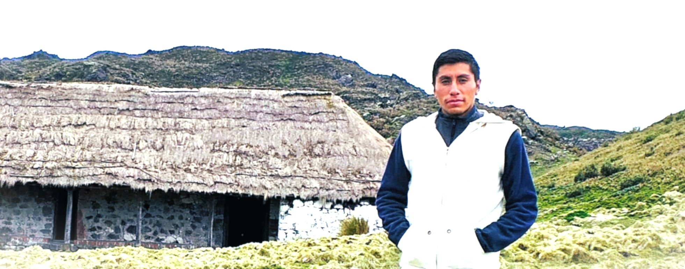
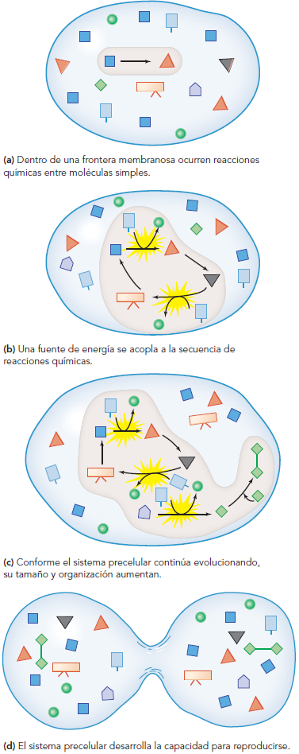
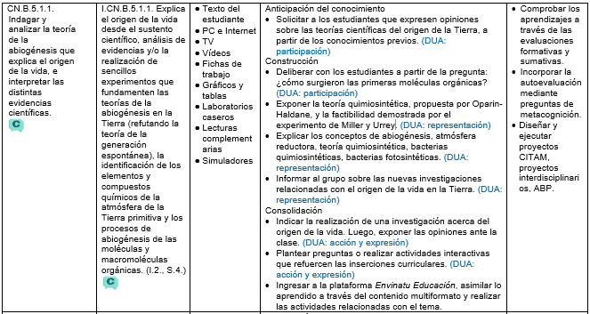

Teoría de la abiogénesis
OG.CN.2. -O.CN.B.5.1. -O.CN.B.5.2. -CN.B.5.1.1. Indagar y analizar la teoría de la abiogénesis que explica el origen de la vida, e interpretar las distintas evidencias científicas.

Imagina la Tierra primitiva, hace miles de millones de años. No existía oxígeno libre y la superficie estaba cubierta por océanos turbulentos, volcanes activos y una atmósfera reductora cargada de gases como dióxido de carbono, metano, amoníaco y vapor de agua.
{kind=link}
Ante estas condiciones extremas surge una pregunta esencial: ¿podría la vida haber aparecido en un mundo sin oxígeno, a partir únicamente de materia inorgánica y energía disponible en el entorno?
Por lo general, los científicos están de acuerdo en que los comienzos de la vida ocurrieron en condiciones ambientales muy diferentes a las de la actualidad. Por tanto, es necesario examinar las condiciones de la Tierra temprana para entender el origen de la vida. La evidencia de muchas fuentes proporciona pistas que ayudan a formular escenarios posibles de las etapas en las que se originó la vida. Su estudio es un área activa de la investigación científica actual y muchas aportaciones importantes se agregan a la comprensión de cómo comenzó la vida.
En el año 1924, Alexander Oparín (Rusia, 1894-1980) publicó el libro llamado “El origen de la vida” que conmocionó al mundo científico, generando gran expectativa pero también oposición. Él planteó que los precursores de las primeras células vivas a los que denominó coacervados (gotículas coloidales de macromoléculas) se originaron en los mares de la Tierra primitiva, a consecuencia de reacciones químicas entre las moléculas que abundaban en ese entonces en su atmósfera reductora (dióxido de carbono, metano, amoníaco y vapor de agua).
John Haldane (1892-1964) llegó a las mismas conclusiones que Oparín y en 1929 publicó un artículo que fue la base de la teoría quimiosintética. Esta teoría abiogénica explica cómo a partir de las moléculas inorgánicas primitivas del planeta, se forman las moléculas orgánicas; estas últimas, al ensamblarse, constituyen a los seres vivos.
Para la evolución química de la vida debieron existir cuatro requisitos: poco o nada de oxígeno libre, una fuente de energía, la disponibilidad de bloques de construcción químicos y tiempo.
Primero, la vida pudo comenzar sólo en ausencia de oxígeno libre. El oxígeno es muy reactivo y habría oxidado las moléculas orgánicas que son los bloques de construcción necesarios en el origen de la vida. Con toda probabilidad la atmósfera temprana de la Tierra era fuertemente reductora, lo que significa que cualquier oxígeno libre habría reaccionado con otros elementos para formar óxidos. En consecuencia, el oxígeno se habría ligado en compuestos.
El origen de la vida también requería energía para realizar el trabajo de construir moléculas biológicas a partir de químicos orgánicos simples. La Tierra primitiva era un lugar de alta energía con violentas tormentas, extensa actividad volcánica, bombardeo de meteoritos y otros objetos extraterrestres, y radiación intensa, incluida radiación ultravioleta del Sol. El joven Sol probablemente producía más radiación ultravioleta que en la actualidad y la Tierra primitiva no tenía capa de ozono protectora para filtrarla.
Un tercer requisito sería la presencia de los bloques de construcción químicos necesarios para la evolución química. En ellos se incluyen agua, minerales inorgánicos disueltos (presentes como iones) y los gases presentes en la atmósfera temprana.
Un requisito final para el origen de la vida era tiempo para que las moléculas se acumularan y reaccionaran entre sí. La Tierra tiene una edad aproximada de 4600 millones de años y la evidencia sugiere que la vida surgió temprano en la historia del planeta.
Evidencias de la teoría quimiosintética
Las primeras pruebas experimentales para la abiogénesis se publicaron recién en 1953, cuando los científicos estadounidenses Stanley Miler (1930–2007) y Harold Urey (1893–1981) aportaron evidencias que constituyeron un fuerte sustento para el marco teórico de Oparin y Haldane.
{kind=link}
Este experimento se constituiría en una de las mejores evidencias de que la quimiosíntesis no es una idea descabellada. Esto no quiere decir, sin embargo, que se haya probado su veracidad, solamente su factibilidad.
Los experimentos, que fueron repetidos varias veces, mostraron que casi cualquier fuente de energía (rayos, radiación ultravioleta o ceniza volcánica caliente) puede convertir las moléculas simples, posiblemente presentes sobre la superficie terrestre, en una variedad de compuestos orgánicos complejos. En experimentos posteriores realizados en distintas condiciones experimentales se obtuvieron casi todos los aminoácidos, así como las unidades constitutivas de los nucleótidos del ADN y del ARN.

Objeciones a la teoría quimiosintética
Otros científicos discrepan de la teoría de Oparín y Haldane sobre su atmósfera reductora, proponiendo que la atmósfera de la Tierra primitiva sí tenía oxígeno proveniente de la disociación de la molécula de agua, provocada por la influencia de los rayos ultravioleta del Sol que llegaban directamente (no había la capa protectora de ozono). De esta manera, la Tierra primitiva pudo tener en su atmósfera algo de oxígeno (aunque inferior al actual) y la formación de compuestos orgánicos en presencia de oxígeno también fue probable.
Pese a que existen ciertas objeciones a la composición de la atmósfera supuesta por Miller en su trabajo, su experimento es importante porque muestra que ciertos compuestos orgánicos podrían haberse formado en las condiciones de la Tierra primitiva, quizás no en los mares abiertos como Oparin propuso inicialmente, pero sí en microambientes protegidos, con condiciones particulares favorables. La mayoría de los bioquímicos coinciden en que, dada la disponibilidad de moléculas precursoras y fuentes de energía existentes en la Tierra joven, las reacciones químicas productoras de aminoácidos, nucleótidos y otras moléculas orgánicas fueron inevitables. Cabe entonces preguntarnos por qué este proceso no ocurre actualmente. La respuesta es simple: las condiciones descritas por Oparin no existen ya en ninguna parte de la superficie terrestre. En la Tierra actual, las moléculas orgánicas se degradarían en presencia de oxígeno o serían devoradas por los organismos que pueblan el planeta. Además, a partir de la aparición de organismos capaces de liberar oxígeno a la atmósfera, se fue constituyendo la capa de ozono capaz de filtrar, y así disminuir, las radiaciones ultravioleta.
Así, los seres vivos modificaron la atmósfera primitiva, los mares y cada rincón de la Tierra, lo que impidió, a su vez, la formación posterior de nueva vida a partir de sustancias inorgánicas. En ese sentido, según palabras de Oparin, …“por paradójico que ello pueda parecer, debemos admitir que la causa principal de la imposibilidad de la aparición de la vida en las condiciones naturales actuales reside en el hecho de que ya existe”.
La vida se desarrolla en el mar
La teoría de Oparín y Haldane explica cómo pudieron haberse formado los precursores de las células. Sin embargo, de ese primer conglomerado de moléculas orgánicas, hay un largo camino que falta descubrir y comprender (como la formación de seres vivos con capacidades de nutrición, relación, reproducción).
Por medio de experimentos se ha comprobado que las condiciones de los mares primitivos pudieron facilitar que las primeras moléculas formadas se hicieran cada vez más complejas gracias, entre otras cosas, a los sedimentos de arcilla que se encuentran en el fondo marino y que al tener una pequeña carga eléctrica pudieron haber atraído a varios compuestos y haber facilitado su reacción química. El siguiente paso parece haber sido la formación de material genético (especialmente el ácido ribonucleico o ARN) que permita la transmisión de las características desarrolladas de una generación a otra.
Así que, para explicar el origen de la vida es necesario responder a una pregunta fundamental: ¿cuál fue la entidad molecular capaz de acumular información genética, de producir copias de su propia estructura y de transmitirlas a la descendencia? Los biólogos actuales acuerdan en que cualquier forma ancestral de vida necesitó un rudimentario “manual de instrucciones” que pudiera ser copiado y transmitido de generación en generación, un requisito esencial para que ocurra un cambio evolutivo.
Muchos científicos apoyaron durante un tiempo la posibilidad de que las proteínas fueran portadoras de la información genética, debido a su complejidad y dado que ciertas proteínas, como veremos en futuras clases, pueden acelerar ciertas reacciones químicas sin sufrir cambios en su estructura (capacidad catalítica).
Hoy se sabe que las proteínas no son capaces de portar información genética y transmitirla a la descendencia. Este papel lo cumplen los ácidos nucleicos, generalmente el ADN. Sin embargo, el problema no queda resuelto, porque el ADN necesita de las proteínas para replicarse y, a su vez, las proteínas necesitan de la información que provee el ADN para sintetizarse. Entonces, ¿quién surgió primero? Este dilema acerca de quién tuvo primacía se asimila al viejo acertijo: “¿quién fue primero, el huevo o la gallina?”.
Por otra parte, el ARN, que transporta la información para la síntesis de proteínas, se copia a partir del ADN. Es improbable que el ADN y las proteínas hayan surgido en el mismo lugar y en el mismo momento y parece también improbable que el uno pueda existir sin las otras.
Uno de los mayores desafíos de la investigación sobre el origen de la vida es dilucidar una historia posible acerca de cómo el ADN, el ARN y las proteínas aparecieron y se vincularon entre si. La propuesta más aceptada es que el ARN habría sido el primer polímero en realizar las tareas que el ADN y las proteínas llevan a cabo actualmente en las células. El ARN podría copiarse a sí mismo a partir de sus propias componentes. Numerosos estudios de laboratorio apoyaron este argumento y se propusieron modelos que explican cómo se pudieron ensamblar las funciones del ADN, el ARN y las proteínas durante la evolución temprana de la vida.
{kind=link}
Son muchos los trabajos realizados y las hipótesis propuestas para explicar cómo surgió el mundo de los ARN y posteriormente la vida; sin embargo, la evidencia en favor de cada una es, a lo sumo, fragmentaria. La colaboración entre químicos, bioquímicos y biólogos moleculares en la realización de experimentos aún más ingeniosos y de modelos más integradores probablemente proporcionará algunas de las piezas faltantes de este rompecabezas.
Las primeras células: algunas evidencias
Si bien no se sabe cuándo aparecieron las primeras células vivas sobre la Tierra, podemos establecer alguna suerte de escala temporal. Los fósiles más tempranos encontrados hasta el momento, semejantes a las bacterias actuales, datan de 3500 millones de años, alrededor de 1100 millones de años después de la formación de la Tierra.
{kind=link}
Hay también evidencias de vida incluso más antiguas, de alrededor de 3800 millones de años, que no son fósiles de organismos, sino evidencias indirectas de su actividad química. Uno de estos indicios proviene de depósitos sedimentarios de la isla de Isua, al oeste de Groenlandia. Al analizar esas rocas, los investigadores encontraron una proporción inesperada entre el carbono-12 y el carbono-13, los dos isótopos estables del carbono que se encuentran en la naturaleza. Los organismos vivos tienden a incorporar en forma selectiva el carbono-12, que es levemente más ligero que el carbono-13. En consecuencia, una proporción mayor que la habitual de carbono-12 en las rocas de Isua indicó que la presencia de alguna forma de vida habría modificado el equilibrio en que se encuentran estos dos isótopos en condiciones abióticas.
Si bien en estas rocas no se hallaron organismos fósiles, tal vez debido a que el calor y los procesos geológicos posteriores los destruyeron, la antigüedad de las evidencias químicas sugiere que los microorganismos responsables de estos desequilibrios se habrían originado incluso antes del fin del bombardeo de meteoritos que sufría la Tierra durante ese período. Los nuevos hallazgos de fósiles o de evidencias indirectas de su existencia nos acercan cada vez más al instante del inicio de la vida.
Sin embargo, es difícil esclarecer cómo en algún momento de la historia de la Tierra algún pequeño agregado de sustancias pudo atravesar la zona de penumbra que separaba lo vivo de lo no vivo, millones de años atrás.
Distintas estrategias energéticas: heterótrofos y autótrofos
Si bien en un principio los primeros seres vivos debieron alimentarse de las moléculas disueltas en su medio, en algún momento dado pudieron haber desarrollado mecanismos para sintetizar su propio alimento. Tal es el caso de las primeras bacterias quimiosintéticas y fotosintéticas que se transformaron en la base de la cadena alimenticia de los ecosistemas marinos.
Los organismos modernos y las células que los componen satisfacen sus requerimientos energéticos en una de dos formas. Algunos incorporan moléculas orgánicas del ambiente exterior, las que degradan para obtener energía y componentes para su estructura. Estos organismos, que incluyen a todos los animales, a los hongos, y a muchos unicelulares, se denominan heterótrofos (del griego, heter “otro” y trophos “el que se alimenta”). Otros organismos son capaces de sintetizar moléculas orgánicas ricas en energía a partir de sustancias inorgánicas simples y, por lo tanto, no requieren moléculas orgánicas del exterior. Estos organismos se denominan autótrofos (del griego, auto “propio”). Entre los autótrofos, las plantas y varios tipos de protistas son fotosintéticos, es decir que utilizan la luz del Sol como fuente de energía para las reacciones de síntesis química. Por otra parte, ciertos grupos de bacterias llamadas quimiosintéticas obtienen la energía para sintetizar moléculas orgánicas de la energía liberada por reacciones inorgánicas.
Tanto los heterótrofos como los autótrofos están representados entre los microfósiles más antiguos. Muchos científicos sostienen que las primeras células vivas fueron heterótrofas. Según esta hipótesis, a medida que los heterótrofos primitivos aumentaron en número, comenzaron a disminuir las moléculas complejas que se habían acumulado durante millones de años, aumentando así la competencia. Entonces, las células que podían usar más eficientemente los recursos limitados fueron las que tuvieron mayor probabilidad de sobrevivir y reproducirse. En el curso del tiempo, habrían aparecido organismos autótrofos, capaces de sintetizar moléculas orgánicas a partir de materiales inorgánicos simples, lo cual habría representado una gran ventaja adaptativa que rápidamente se propagó.
Sin embargo, descubrimientos recientes sugieren que las primeras células podrían haber sido autotróficas, quimiosintéticas o fotosintéticas antes que heterotróficas. Muchas de las bacterias extremófilas que se han descubierto en los últimos años habrían sobrevivido cómodamente en las condiciones de la Tierra primitiva. Es probable que sin los autótrofos, la evolución de la vida en la Tierra pronto habría llegado a un callejón sin salida, ya que por medio de procesos como la fotosíntesis, la energía capturada de fuentes como el Sol por los autótrofos fotosintéticos alcanza y sustenta a todas las otras formas de vida.
Con el surgimiento de la fotosíntesis, que se ha calculado sucedió hace 3 punto 5 eones, también la atmósfera inició su camino de transformación para permitir la vida en el ambiente terrestre.
Competencia matemática
Se dice que el universo tiene un poco menos de 14 mil millones de años. Investiga cómo se llegó a esta conclusión y mediante qué algoritmos se calcula dicha edad.
Interdisciplinariedad
Biología y Embriología. Así como la vida se originó en el mar (filogenia), el ser humano también tiene su origen en el agua (ontogenia). Indaga qué significa la siguiente expresión en Biología: ‘la ontogenia solo es la recapitulación de la filogenia’.
